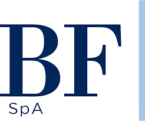

Settore primario
L'attività agricola richiede una gestione attenta di acqua, suolo, biodiversità ed energia, risorse centrali per la continuità produttiva.

Project Work ESG
Pagina divulgativa dedicata alle attività ambientali, sociali e di governance di Bonifiche Ferraresi S.p.A., realizzata con HTML e CSS.
Scarica il reportChi siamo
Bonifiche Ferraresi S.p.A. appartiene al settore agricolo e agroindustriale. Il settore primario è direttamente collegato alla gestione responsabile del suolo, dell'acqua, dell'energia e delle risorse naturali.
Il progetto web sintetizza i contenuti dell'ultimo report disponibile in una pagina semplice e navigabile, pensata per comunicare le principali informazioni ESG a studenti, stakeholder e utenti interessati alla sostenibilità.
Contesto aziendale
Nel settore agricolo la sostenibilità non riguarda solo l'ambiente, ma anche qualità della filiera, sicurezza alimentare, innovazione tecnologica, lavoro e governance.
L'attività agricola richiede una gestione attenta di acqua, suolo, biodiversità ed energia, risorse centrali per la continuità produttiva.
La tracciabilità e la qualità dei prodotti contribuiscono a creare fiducia verso consumatori, investitori, comunità locali e partner commerciali.
Agricoltura di precisione, digitalizzazione e controllo dei processi aiutano a ridurre sprechi e migliorare efficienza, sicurezza e sostenibilità.
Dati dal report
Clicca sulle card per visualizzare statistiche e informazioni più dettagliate tratte dalla rendicontazione più recente disponibile.
Fonte sintetica: Annual Report / Rendicontazione 2025.
La card Ambiente mostra che il report non si limita a descrivere iniziative generiche, ma collega la sostenibilità agricola alla gestione del rischio climatico, alla tutela delle risorse naturali e alla prevenzione degli impatti ambientali.
Fonte sintetica: Annual Report / Rendicontazione 2025.
La card Sociale evidenzia il ruolo delle persone nella sostenibilità aziendale. Il report richiama la formazione obbligatoria in materia di salute e sicurezza, la sorveglianza sanitaria e lo sviluppo di competenze anche in ambito digitale e cybersecurity.
Fonte sintetica: Relazione governance e Annual Report 2025.
La card Governance mostra come la sostenibilità dipenda anche da controllo, trasparenza e gestione dei rischi. Nel report sono richiamati modelli organizzativi, controlli interni, cybersecurity e informativa verso stakeholder e investitori.
Dove ci troviamo
La sede sociale indicata dal sito ufficiale è in Via Cavicchini, 2, Jolanda di Savoia, in provincia di Ferrara.
Per sedi, aggiornamenti societari e documenti ufficiali è consigliabile consultare direttamente il sito aziendale, così da usare informazioni sempre corrette.
Processo di sviluppo
Selezione dell'impresa del settore primario e raccolta dell'ultimo report disponibile.
Analisi dei contenuti ESG e scelta dei dati da mostrare nelle card cliccabili.
Realizzazione della struttura HTML con sezioni ordinate e navigazione interna.
Creazione del CSS con palette bianco, verde e rosso e layout responsive.
Documento ufficiale
Scarica il report inserito nella repository per consultare il documento completo relativo alla rendicontazione di sostenibilità dell'impresa.
Scarica il Report PDFContatti
Per approfondimenti sull'impresa e sui documenti societari è possibile consultare i canali ufficiali di Bonifiche Ferraresi / BF S.p.A.
Report, comunicati e informazioni societarie disponibili sul sito ufficiale.